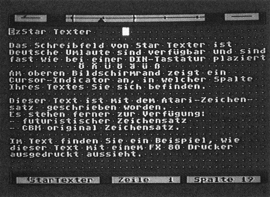
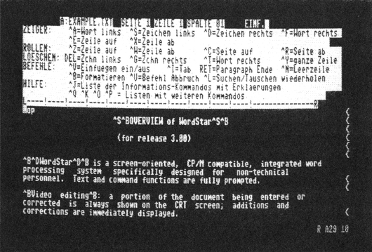
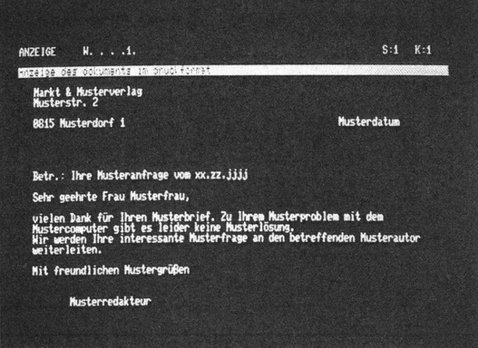
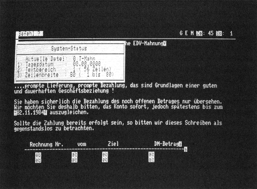
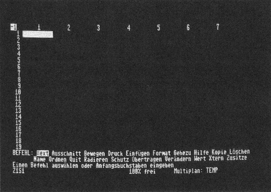
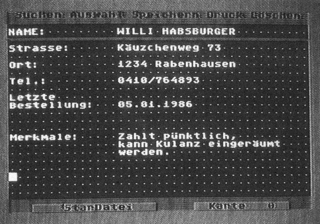

Das Computerbüro
Heimcomputer lassen sich als professionelle Geräte im Büro einsetzen – vorausgesetzt man hat sich die richtige Software zugelegt. Einige »professionelle« Programme aus den Bereichen Textverarbeitung, Datenverwaltung und Tabellenkalkulation sollen vorgestellt werden.
Teilweiser Nachdruck aus 64'er 5/84, S. 46 (nur der gekürzte Test von Superbase 64), 64'er 9/85, S. 135 (nur der gekürzte Test von Star Texter), 64'er 2/86, S. 18 (nur der gekürzte Test von Superbase für den C 128 mit Tabelle 1 und 2), 64'er 2/86, S. 20 (nur der gekürzte Test von Superscript), 64'er 2/86, S. 21 (nur der gekürzte Test von Protext 128) und 64'er 4/86, S. 149 (nur der gekürzte Test von StarDatei). Die übrigen Abschnitte sind nicht aus diesen Ausgaben übernommen.
Wird einem Computeranfänger im Heim- oder Kleinbetriebsbereich ein Profiprogramm, wie Textverarbeitung oder Kalkulation angeboten, so stößt der Anbieter meistens auf Ablehnung. Diese Haltung des Anwenders rührt meistens aus der Unkenntnis der Anwendungsmöglichkeiten dieser Programme her. Dabei ist es gerade ein solches Programm, das einem Computer zu ungeahnten Leistungen im Verwaltungsbereich verhilft. Ist ein Anwender zu dieser Erkenntnis gekommen, so macht er leicht den naheliegenden Fehler, zuerst den Computer und dann das Programm zu kaufen. In einigen Fällen geht das gut aus, dennoch wird es meist so sein, daß das Programm nicht den gestellten Anforderungen entspricht. Ein Anwender, der lediglich ab und zu Briefe schreibt, ist mit einem Textprogramm der mittleren Klasse gut bedient. Er wird nichts von einem Programm mit allen nur denkbaren Raffinessen haben, denn solche Programme erfordern einen teuren Hardwareaufwand und sind oft nicht einfach zu bedienen.
Andererseits wird ein Schriftsteller, der jeden Tag mit dem Textsystem arbeitet, die Bedienungsfunktionen schnell im Griff haben. Da er seine Texte oft ändern muß, kommen ihm die mannigfaltigen Möglichkeiten sehr zugute.
Um die Kaufentscheidung für das richtige Programm zu vereinfachen, haben wir verschiedene Programme für den Commodore 64 und Commodore 128 PC zusammengestellt und ihre Haupteinsatzgebiete herausgearbeitet. Die hier beschriebenen Programme sind in drei Gruppen einzuteilen: in Textverarbeitungsprogramme, Datenbanken und Kalkulationsprogramme.
Da die Textverarbeitung oft gebraucht wird, findet man hier die größte Anzahl von Programmen. Getestet wurden Vizawrite 64, Textomat Plus und Star Texter für den Commodore 64 sowie Wordstar, Superscript und Protext-128 für den Commodore 128.
Vizawrite für den C 64
Das wohl beste, aber auch teuerste Textverarbeitungsprogramm für den Commodore 64 ist Vizawrite. Mit diesem Programm ist auch mit der auf 40 Zeichen Breite eingeschränkten Bildschirmdarstellung fast professionelle Textverarbeitung möglich. Der Mangel wird dadurch kompensiert, daß der Bildschirm wie ein Fenster über den Text verschoben wird. Auf diese Weise ist es möglich, bis zu 240 Zeichen pro Zeile zu editieren. Das hat den Vorteil, daß der Text bei der Erstellung gleich so formatiert werden kann, wie er später ausgedruckt werden soll. Dazu hat der Anwender außer einem flexiblen Editor Tabulatoren, Dezimaltabulatoren, Zentrierung, Einrückbefehle und Blocksatz zur Verfügung (Blocksatz ist das Ausrichten des rechten Textrandes).
Eine weitere Hilfe bietet das sogenannte Word-wrapping. Dabei wird ein Wort, das nicht mehr in die gerade bearbeitete Zeile paßt, komplett in die nächste übernommen. Das verhindert die Entstehung von schwer les- und editierbaren Wortleichen am Ende einer Zeile. Der zu erstellende Text darf bei Vizawrite zirka 32000 Zeichen umfassen, was etwa acht bis neun vollgeschriebenen Schreibmaschinenseiten entspricht. Das ist weit mehr, als die meisten Programme bieten.
Ist ein Text fertig erstellt, so empfiehlt es sich, ihn zur Korrektur im Zusammenhang zu lesen. Da sich das mit dauerndem Bildschirmverschieben äußerst mühselig gestalten würde, gibt es die Möglichkeit, mit einem Befehl den gesamten Text auf 38 Zeichen Breite umzuformatieren. Die Editiermöglichkeiten bleiben dabei erhalten. Nachdem alle Fehler beseitigt sind, wird die Umformatierung wieder rückgängig gemacht.
Der Ausdruck von Texten gestaltet sich bei Vizawrite sehr flexibel, denn es werden eine Reihe von Druckern und Schreibmaschinen standardmäßig unterstützt. Sollte man dennoch im Besitz eines Ausgabegerätes sein, das nicht im Druckermenü enthalten ist, so kann man auf die Definition von Druckersteuerzeichen zurückgreifen. In der sogenannten Formatzeile (die beliebig oft verändert werden kann) können jeweils bis zu zehn Steuersequenzen vereinbart werden, um etwa den Ausdruck auf Papier ganz den individuellen Anforderungen anpassen zu können (zum Beispiel Sperrschrift).
Ist der Druckmodus aufgerufen, können die meisten Einstellungen zum Ausdruck verändert werden, wie Randausgleich, Papierlänge, Druckertyp, etc. Zusätzlich kann der Anwender Kopf- und Fußzeilen definieren. Dies ermöglicht zum Beispiel automatische Seitennumerierung, immer wiederkehrende Erklärungen, Tabellenüberschriften, etc. Hier offenbart sich noch ein Vorteil des Systems: Diese Einstellungen müssen nicht jedesmal neu vorgenommen werden, sondern sie werden mit dem Schriftstück gespeichert, ebenso Farbeinstellungen und Formatierungsbefehle. Dies vereinfacht die Weiterverarbeitung von schon erstellten Texten erheblich. Der Ausdruck von Vizawrite muß nicht über die serielle Schnittstelle des Commodore 64 erfolgen, auch Drucker mit Centronics-Anschluß (Parallelübertragung) werden angesprochen. Dazu benötigt man ein Kabel, dessen eines Ende in den User-Port gesteckt wird, das andere in die Centronics-Buchse des Druckers. Dieses Kabel ist für zirka 50 Mark in allen Fachgeschäften erhältlich.
Das gleiche Kabel braucht man, um diese Drucker bei den Programmen für den Commodore 128 betreiben zu können. An Befehlen stellt Vizawrite zur Verfügung:
Verschieben und Kopieren von Textblöcken, Laden von Textbausteinen von Diskette, Suchen und Ersetzen, Löschen und Einfügen von Worten oder ganzen Zeilen und Diskettenbedienung. Sämtliche Befehle werden durch das Drücken zweier Tasten aufgerufen. Dadurch wird die Bedienung sehr schnell und einfach. Zum Laden von Textbausteinen ist noch hinzuzufügen, daß diese nicht unbedingt mit Vizawrite erstellt sein müssen. Es werden viele Fremdformate unterstützt, was auch die Weiterverarbeitung von Texten anderer Programme (Assembler, Multiplan, etc.) ermöglicht.
Eine für den Geschäftsbereich besonders wichtige Eigenschaft ist die Möglichkeit der Erstellung von Serienbriefen. Dabei werden die benötigten Daten wahlweise aus einem dafür reservierten Speicher oder von Diskette geholt.
Insgesamt betrachtet, ist Vizawrite 64 das ideale Programm für den Vielschreiber, der nicht zuviel Geld in die Hardware investieren will oder kann. Das Geld, das der Computer weniger kostet, kann für den Drucker ausgegeben werden, an dem sowieso nicht gespart werden sollte, denn er hat einen ganz entscheidenden Einfluß auf das Aussehen des fertigen Schriftstückes.
Textomat für den C 64
Das Textverarbeitungsprogramm Textomat Plus besitzt Eigenschaften, die man bei keinem anderen Programm findet. Gleich beim Programmstart offenbaren sich dem Anwender die vielfältigen Einstellmöglichkeiten. Bevor ein Wort geschrieben wird, sind der Bildschirmzeichensatz und die Druckeranpassung zu laden. Da bei Textomat die Möglichkeit vorhanden ist, den Bildschirm und Druckerzeichensatz zu verändern (das hat natürlich nur bei Matrixdruckern einen Sinn), hat der Anwender keine Schwierigkeiten, Zeichen zu Papier zu bringen, die nicht dem Standard entsprechen. Die Zeichen werden mit einem einfach zu bedienenden Hilfsprogramm geändert. Jedes Zeichen ist aus Punkten zusammengesetzt, und man kann mit dem Zeicheneditor die einzelnen Punkte setzen oder löschen. Dies ist eine große Hilfe für alle Anwender, die Sonderzeichen häufiger benötigen, wie beispielsweise Techniker. Soll eine etwas größere Grafik in den Text eingefügt werden, so braucht man sich beim Textomat Plus nicht mit einzelnen Druckzeichen abzugeben, sondern lädt einfach die Grafik in den Textspeicher, wobei allerdings bestimmte Regeln beachtet werden müssen, die zumindest Anfängern Probleme bereiten. So ist es nicht einfach möglich, mit einem Malprogramm erstellte Grafiken zu laden. Trotzdem war Textomat Plus das erste Programm, mit dem Text und Grafik verarbeitet werden konnten. Leider sind diese Abfragen am Anfang für den Neuling etwas verwirrend. Nach dem Programmstart mit »LOAD"*",8,1« werden Fragen nach dem Druckersteuersatz und dem Bildschirmzeichensatz gestellt. Für unerfahrene Anwender empfiehlt es sich daher, bei jeder Frage einfach »F1« zu drücken (Bestätigung), bis man in den Schreibmodus kommt.
Für jemanden, der zum ersten Mal ein Textprogramm benutzt, sind vorrangig die Möglichkeiten zur Textmanipulation wichtig. Bei Textomat Plus sind diese Funktionen nicht gerade benutzerfreundlich geraten. Es gibt zwar ähnliche Funktionen wie bei Vizawrite, aber ihre Anwendung ist aufwendiger. Während bei Vizawrite einfach die Textteile, die kopiert, gelöscht oder verschoben werden sollen, mit dem Cursor markiert wurden, ist die Handhabung des Textomats komplizierter. Diese Befehle funktionieren nur zeilenweise, man muß also immer nach der Ausführung dieser Funktionen den überschüssigen Text löschen. Das erleichtert die Arbeit nicht gerade, das Aufrufen der Funktionen ist aber für den unerfahrenen Computerbenutzer gut gelöst. Alle Befehle lassen sich über Menü auswählen. Da diese Menüs immer aussagen, was der gerade aufgerufene Befehl bewirkt, kommt man schnell ohne Handbuch aus. Das hat Vorteile, wenn Sie nur ein Gelegenheitsschreiber sind, denn das Programm läßt sich so ohne Probleme bedienen. Für die, die öfter oder gar professionell mit dem Computer schreiben wollen, eignet sich Textomat Plus nicht so sehr, denn die Menütechnik kostet viel Zeit. Zusätzlich behindert die zeilenweise Ausführungsweise der Befehle ein schnelles Schreiben. Der Textomat Plus ist besonders für den Anwenderkreis geeignet, der gerne hochauflösende Grafik und Text mischen oder damit experimentieren möchte, oder auch Datenfernübertragung (DFÜ) durch das Telefon mit diesem Programm bewältigen will. Der integrierte Terminalmodus erlaubt es, beispielsweise in Mailboxen (sozusagen elektronische Briefkästen) herumzustöbern.
Star Texter, die Textverarbeitung aus dem Sybex-Verlag, wird komplett mit sehr gutem deutschen Handbuch, Diskette und einem Funktionsangebot geliefert, das zu dem Preis von 64 Mark seinesgleichen sucht. Da in Deutschland entwickelt, sind klare deutsche Kommandos und eine an die DIN-Norm angelehnte Tastenbelegung mit den deutschen Sonderzeichen (ö,ä,ü,ß) selbstverständlich. Es ist äußerst angenehm, daß man sich sofort nach dem Laden im Schreibmodus befindet, ohne sich erst durch ungezählte Menüs zu kämpfen. Alle notwendigen Funktionen und Einstellungen werden während der Arbeit mit Star Texter aufgerufen, beziehungsweise vorgenommen.
Immer gleichbleibende Parameter, wie der Druckertyp, der Zeichensatz, Tastaturbelegungen, Diskettenlaufwerke und Farbeinstellungen werden, nachdem sie einmal festgelegt wurden, automatisch mitgeladen.
Star Texter für den C 64
Wer schon mit anderen Textprogrammen gearbeitet hat, weiß, daß es Funktionen gibt, die häufig benötigt und andere, die zwar wichtig sind, aber eben seltener gebraucht werden.
Star Texter verfügt über alle Grundfunktionen. Editieren, Verschieben, Löschen und Kopieren funktionieren schnell und korrekt. Leider sind diese Operationen teilweise blockorientiert, das heißt, sie sind immer nur auf ganze Zeilen anwendbar. Während es durchaus möglich ist, beliebig viele Worte mitten in einen Text einzufügen, können Textteile immer nur als ganze Zeilenblöcke verschoben werden.
Neben der Qualität der Grundfunktionen gewinnen die Sonderfunktionen, die für manche Anwendung besonders wichtig sind, an Bedeutung. Gerade in diesem Punkt hebt sich Star Texter von seiner Konkurrenz ab. Zunächst fällt auf, daß es zu keinem Zeitpunkt notwendig ist, die Systemdiskette nochmals einzulegen.
Wie fast alle bekannten Textprogramme versucht auch Star Texter, die 40-Zeichen-Darstellung zu umgehen. Das Schreibfeld besteht aus 21 Zeilen und bis zu 80 Spalten. Der Bildschirm wird dabei horizontal verschoben. Ein kleines Fenster am oberen Bildschirmrand gibt jederzeit Aufschluß über die aktuelle Cursorposition in einer Zeile (Bild 1). Andere Fenster informieren über die aktuelle Zeile und Spalte sowie über den jeweiligen Befehlsmodus. Da der Text nach der 21. Zeile ebenfalls vertikal verschoben wird, bis die maximale Zeilennummer 250 erreicht ist, kann man auch von einem großen Arbeitsblatt sprechen. Dieses Arbeitsblatt besteht aus 20000 Zeichen oder umgerechnet etwa sechs bis sieben Schreibmaschinenseiten. Wer mit diesem Textspeicher nicht auskommt, kann einzelne Schriftstücke aneinanderbinden. Erfreulich ist in diesem Zusammenhang, daß Star Texter auch bei fast gefülltem Textspeicher kaum langsamer wird.

Manchmal ist es von Nutzen, ein Schriftstück so betrachten zu können, wie es später auf dem Papier ausgedruckt wird. Nur so läßt sich feststellen, ob die Absätze stimmen, die Überschriften korrekt sind und der gesamte Text harmonisch verteilt ist. Star Texter bietet dafür einen sehr sinnvollen, weil einfach zu bedienenden, 80-Zeichen-Modus an. Durch einfaches Drücken auf die CBM- und SHIFT-Taste wird der gesamte Text umformatiert und kann in seiner Originaldruckbreite gelesen werden. Durcksonderfunktionen, wie beispielsweise Fettschrift und Unterstreichungen, bleiben (auf dem Bildschirm) allerdings unberücksichtigt. Der 80-Zeichen-Modus ist vor allem dann von großem Nutzen, wenn es um die Erstellung von Tabellen und formatierten Texten geht. Für diese Aufgabe bietet Star Texter noch weitere sehr sinnvolle Ergänzungen an: die Rechenfunktionen. Es sind alle Rechenoperationen und die im Commodore-Basic üblichen Operationen und Befehle gestattet. Der eigentliche Clou an diesem Modus ist seine Programmierbarkeit. Mit einem Befehlsspeicher von 3325 Byte lassen sich schon manche nützliche Routinen programmieren und im Text einbinden. So werden Anwendungen denkbar, bei denen im Text verschiedene Werte errechnet und anschließend weiterverarbeitet werden. Das Schreiben von Rechnungen, Listen und Karteikarten könnten solche Anwendungen sein.
Bei der Frage, wie ein bedienungsfreundliches Programm aussehen soll, gehen die Meinungen stark auseinander. Man könnte das hier angewendete Prinzip auch als Seitenkonzept bezeichnen, denn Star Texter verwendet nur drei Hauptmenüs und ein kleines Untermenü. Alle Hauptmenüs werden mit den Funktionstasten aufgerufen und sind nach Themenkreisen geordnet. Es gibt ein Disketten-, ein Drucker- und ein Sammelmenü, das selbst wiederum aus drei Seiten besteht. Während das Floppy- und Druckermenü ihre Funktion selbst erklären, sind im Sammelmenü alle nicht direkt zugeordneten Funktionen vereinigt. Einige dieser insgesamt 30 Einstellparameter werden von kaum einem bisher bekannten Programm angeboten. Beispielsweise der Unterpunkt Zeichensatz: Auf der Programmdiskette werden drei vorprogrammierte Zeichensätze (CBM, Atari, Futura) mitgeliefert. Diese Zeichensätze kann man als Beispiele ansehen, denn prinzipiell ist Star Texter in der Lage, jedes beliebige Zeichen abzubilden. Damit der Entwurf eines neuen Zeichensatzes nicht zum Problem wird, hat man auf der Diskette gleich auch ein Hilfsprogramm abgelegt. Es nennt sich Star Font, ist sehr komfortabel und läßt fast jede Manipulation des Zeichensatzes zu.
Die Palette der Anwendungen dieses Modus reicht von einzelnen wissenschaftlichen Zeichen bis hin zum kompletten Zeichensatz. Das ganze Entwerfen eines Zeichensatzes könnte natürlich als netter Gag bezeichnet werden, wenn es da nicht noch eine andere Funktion gäbe, mit der die neuen Zeichen auch auf dem Drucker verewigt werden könnten. Star Texter verfügt über einen Grafikdruck, der zwar deutlich langsamer aber dafür eben jedes beliebige Zeichen drucken kann. Allerdings wird der Wert der Funktion dadurch geschmälert, daß selbst auf einem Epson- oder Star-Drucker alle Zeichen (auch die nicht geänderten) wackelig ausgegeben werden, wie es von der MPS-802-Grafik her bekannt ist.
Formatieren leicht gemacht
Hier wäre es sinnvoll, die Grafikfähigkeit eines angeschlossenen Matrixdruckers besser auszunutzen. Daß der Autor sich über die Fähigkeiten verschiedener Drucker durchaus im klaren war, zeigen zwei andere Funktionen. Zum einen kann die Punktdichte des Grafikdruckes beim Epson mit ESC * variiert werden, zum anderen ist die ESC!-Funktion (Wahl der Schriftart) durch einen einfachen Parameter einzustellen.
Es hieße, einiges der Fähigkeiten einer computergestützten Textverarbeitung zu verschenken, wenn man auf einen Formatier-Modus verzichtet. Star Texter tut dies nicht. Er bietet, angewählt durch den Parameter »Trennungen« im Sammelmenü und aufgerufen aus dem Druckermenü, eine sinnvolle Funktion zum Trennen langer Worte und Sätze. Setzt man den entsprechenden Parameter, so fragt Star Texter beim Bildschirm-Formatieren (und bei der Komplett-Formatierung) in (fast) jeder Zeile nach, ob ein Wort getrennt werden soll oder nicht. Insbesondere in Verbindung mit dem ebenfalls leicht einstellbaren Blocksatz (rechter und linker Randausgleich) wird so vermieden, daß zu große Lücken in einer Textzeile entstehen. Ebenso einfach wie das Formatieren eines Textes ist auch die Wahl des Druckertyps. Dabei sind für die wohl derzeit am meisten verbreiteten Drucker (Commodore, Epson, Star) spezielle Druckmodi voreingestellt, wobei unterschieden wird, ob ein Drucker mit Hardware-Interface (Görlitz, Data Becker, Wiesemann) oder aber nur mit einem Kabel am User-Port angeschlossen ist. Betreibt man einen Drucker mit Centronics-Schnittstelle, kann jegliches Interface (bis auf das Kabel) entfallen, denn Star Texter hat einen eigenen Druckertreiber. Bei solcher Leistungsfähigkeit verwundert es kaum noch, daß alle selbstdefinierten Zeichen und die deutschen Sonderzeichen auch auf den Commodore-Druckern, die dazu normalerweise nicht in der Lage sind, wiedergegeben werden.
Star unter den Sternen
Vergleicht man die Leistungsfähigkeit und komplette Ausstattung von Star Texter mit dem Preis von 64 Mark, so dürfte es derzeit wohl kaum einen Konkurrenten geben. Zwar ist das zeilenweise Verschieben und Kopieren sicher noch zu verbessern, und auch beim Grafikdruck ist noch nicht das Optimum erreicht. Dafür bietet Star Texter aber ein umfangreiches, absturzsicheres und vor allem leicht zu bedienendes Leistungsangebot, das hauptsächlich bei den Sonderfunktionen glänzt. Frei definierbare Zeichensätze, Grafikdruck und Formatmodus sind schon fast Argument genug, um dieses Programm als gut zu bezeichnen. Der 80-Zeichen-Modus, der ohne zusätzliches Nachladen bereitsteht, dürfte für ein Programm in dieser Preisklasse wohl einmalig sein. Mit seinem anwenderfreundlichen Preis (64 Mark) und einem fast durchwegs gelungenen Konzept dringt Star Texter eindeutig in die Spitzenklasse aller Textverarbeitungsprogramme für den C 64 vor.
WordStar 128
Das älteste und wohl auch verbreitetste Textverarbeitungsprogramm für CP/M-Computer ist WordStar von MicroPro. WordStar hat eine lange Geschichte, die in die Anfangstage des Betriebssystems CP/M zurückreicht. Kurz nachdem es auf den Markt kam, hatte es sich als Standard auf dem Textverarbeitungssektor etabliert. Fast jedes folgende Textverarbeitungsprogramm versuchte, einige Funktionen oder Befehle zu übernehmen. Dennoch haben die Entwickler von WordStar ihr Produkt immer wieder verbessert; die momentan zu kaufende Version ist also immer noch aktuell.
WordStar läuft auf dem Commodore 128 unter dem Betriebssytem CP/M Plus. Dazu müssen Sie das Betriebssystem laut Computerhandbuch starten. Hier ist leider schon die erste Hürde für Anfänger zu finden. Es ist empfehlenswert, sich mit einem Einführungsbuch für dieses Betriebssystem zu befassen, um CP/M näher kennenzulernen. Für die ersten Versuche ist allerdings im Handbuch Schritt für Schritt erklärt, wie WordStar zu starten ist.
Ist das Starten erfolgreich verlaufen, offenbart sich nach kurzer Zeit das Anfangsmenü, von dem aus verschiedene Funktionen von WordStar aufzurufen sind (Bild 2). Durch Eingabe von »d« und einem Dateinamen gelangt man in den Bearbeitungsmodus, von dem aus sämtliche Funktionen zur Textmanipulation aufgerufen werden können. Zum Erfolg dieses Textverarbeitungsprogrammes trägt unter anderem die große Anzahl von Funktionen, die geboten werden, wie auch der hohe Verarbeitungsgrad des Programmes auf verschiedenen CP/M-fähigen Computern bei. Es sind sowohl Standardfunktionen enthalten (suchen, tauschen, Block bewegen, kopieren, löschen etc.), als auch eine Reihe ausgefallener Möglichkeiten. So ist zum Beispiel ein Befehl vorhanden, die Seitennumerierung abhängig von der Seitenzahl am linken oder rechten Rand erscheinen zu lassen (das ist für Druckvorlagen sehr angenehm). Ebenso wird eine komfortable Behandlung von Textbausteinen angeboten. Sogenannte Textbausteine sind einzelne, immer wiederkehrende Phrasen oder Abschnitte, wie zum Beispiel ein Briefkopf oder Angebotstexte. Diese können einzeln erstellt und gespeichert werden. So ist es im Extremfall möglich, daß ein ganzer Brief nur aus Textbausteinen zusammengesetzt wird. Einzig die Adresse müßte noch von Hand eingesetzt werden. Aber auch dafür existieren Methoden, die später beschrieben werden.

Aufgerufen werden diese Befehle durch ein bis drei Tastendrücke. Hier liegt die zweite Hemmschwelle, die allerdings nicht nur für Computerneulinge gilt. Bevor Sie nicht diese Befehlskombination in etwa beherrschen, artet die Arbeit mit WortStar in Handbuchblättern aus. Um diesem Zustand abzuhelfen, wurden zwei Vorkehrungen getroffen. Das Handbuch bietet eine Übersichtskarte mit allen Befehlen und deren Kurzbeschreibung, das Programm selbst zeigt eine Tabelle der momentan aufrufbaren Funktionen an. Bei Befehlen, die durch Drücken verschiedener Tasten aufgerufen werden, wird kurz nach dem Drücken der ersten Taste die zu diesem Befehl gehörige Tabelle mit allen weiteren möglichen Tastendrucken angezeigt, falls nicht sofort weitere Eingaben erfolgen. Für erfahrene WordStar-Benutzer gibt es die Möglichkeit, das Anzeigen der Tabellen zu unterdrücken.
Schon diese kurze Übersicht vermittelt einen Eindruck der Vielseitigkeit von WordStar. Das Einsatzgebiet liegt vorrangig im professionellen Bereich. Es ist ohne weiteres möglich, geschäftlichen Schriftverkehr mit diesem Programm abzuwickeln. Unterstützt wird gerade der kommerzielle Einsatzbereich durch den mitgelieferten »MIX-Druck«, im Original Mailmerge genannt. Dieses Zusatzprogramm bietet die Möglichkeit, Adressen, Anschriften oder ganze Textteile beim Druck einer anderen Quelle zu entnehmen. Die andere Quelle wird in den meisten Fällen eine Datei auf Diskette sein. Die Datei kann entweder mit WordStar selbst erstellt worden sein oder von anderen Programmen kommen (zum Beispiel von Multiplan 128 oder dBase II). Mit Hilfe von Mailmerge sind sogenannte Serienbriefe möglich. Das sind gleichlautende Briefe, die an verschiedene Empfänger geschickt werden. Dadurch, daß bei jedem Brief eine individuelle Adresse, Anschrift, Anrede oder andere Informationen eingesetzt werden, sehen die Briefe nicht nach Serienbriefen aus.
Insgesamt betrachtet besticht WordStar durch seine vielfältigen Möglichkeiten, die allerdings, wie schon gesagt, durch die für Anfänger sehr schwer zu durchschauende Bedienung erkauft werden muß. Ist man aber einmal eingearbeitet, so möchte man vieles nicht mehr missen.
Wer schon einmal mit WordStar auf einem anderen CP/M-Computer oder IBM-PC geschrieben hat, wird allerdings beim C 128 etwas enttäuscht sein. Die Verarbeitungsgeschwindigkeit läßt doch zu wünschen übrig. Schuld daran ist jedoch nicht WordStar, sondern vielmehr das CP/M des C 128.
Hier zeigt sich ziemlich deutlich, daß das CP/M nicht das bevorzugte Betriebssystem des C 128 ist. Sehr schnelle Programme können viel eher im eigentlichen C-128-Modus entstehen. Ein Beispiel dafür ist Protext.
Superscript
Superscript entstand in der Programmschmiede Precision Software, die auch so bekannte Produkte wie »Easyscript« und »Superbase« entworfen hat. Bei der Entwicklung von Superscript wurde besonders darauf geachtet, gerade den Speichergewinn beim C 128 so gut wie möglich auszunutzen. So verfügt man über zwei Textspeicher von 58 und 17 KByte, zwischen denen man Texte frei hin- und herschieben kann. Das dürfte für normalen Einsatz mehr als genügen, zumal man auch mehrere Textdateien miteinander verbinden kann. Bei Superscript kann man sich aussuchen, in welchem Modus man arbeiten will: 40 oder 80 Zeichen pro Zeile. Wem 80 Zeichen zum Editieren immer noch nicht ausreichen, der kann eine neue Zeilenbreite beliebig festlegen, wobei der Text dann horizontal hin- und hergeschoben wird. Ein Übergang zum Datenbankprogramm »Superbase 128« aus gleichem Hause ist ebenfalls möglich, wobei allerdings alle bestehenden Daten im Speicher verloren gehen.

Eigenwillige Menütechnik
Bei fast allen Textverarbeitungsprogrammen werden einzelne Befehlsaufrufe über Sondertasten wie ESC, CTRL oder andere eingeleitet, gefolgt von einer Buchstabentaste, die dann den eigentlichen Befehl aktiviert. Bei Superscript dagegen werden selbst die einfachsten Befehle wie »Tabulator setzen« über ein Hauptmenü und mehrere Untermenüs angewählt. So gibt es insgesamt mehr als 25 Menüs, über die sämtliche Funktionen des Programms ansprechbar sind. Das jeweilige Menü wird dabei immer in der ersten Zeile angezeigt, wobei man dann mittels Cursortasten oder Anfangsbuchstaben der aufzurufenden Funktion auswählen kann. Dabei können Untermenüs weitere Untermenüs enthalten. Diese auf den ersten Blick sehr umständlich und überholt wirkende Methode wird allerdings dadurch entscheidend aufgewertet, daß man über die ESC- und die Commodore-Taste mit Hilfe der Buchstaben weit über 50 Befehlsketten definieren kann. So kann sich jeder selbst seine spezifischen Funktionsaufrufe zusammenbasteln, und damit die langwierige Menütechnik vollständig umgehen.
Die festgelegten Funktionen sollten dabei in eine Datei mit dem Namen »Defaults« eingetragen werden, die immer beim Laden des Programmes mit eingelesen wird. Dort kann man auch die Bildschirmfarben individuell einstellen. Weiterhin findet sich dort ein Verweis auf eine Datei, in der die speziellen Druckerparameter untergebracht sind. So kann man das Programm an nahezu jeden Drucker anpassen. Für die wichtigsten Drucker sind entsprechende Dateien schon eingerichtet.
Gute Grundfunktionen
Selbstverständlich sind Standardbefehle wie Einfügen, Löschen, Kopieren und Verschieben im Programm realisiert.
Überdurchschnittlich gut ausgefallen sind die Such- und Ersetzfunktion. Sie erlauben Vorwärts- und Rückwärtsbetrieb sowie das Quittieren bei jedem gefundenen Wort. Somit lassen sich einzelne Stellen beim Ersetzen überspringen. Mit Hilfe mehrerer Rechenfunktionen läßt sich im gewissen Rahmen auch Tabellenkalkulation durchführen.
Floppybehandlung
Komfortabel gelöst ist das Laden von Texten. Man kann hier direkt aus einem Disketten-Inhaltsverzeichnis laden, ohne den Dateinamen eingeben zu müssen. Da Superscript sequentielle Dateien erzeugt, gibt es auch hier keine Schwierigkeiten mit der Verarbeitung von Fremddateien. Ebenfalls sehr nützlich ist das Umleiten eines Ausdrucks in eine Datei auf Diskette. Floppybefehle und ein vollständiges Inhaltsverzeichnis sind ebenfalls kein Problem.
Erst schreiben, dann drucken
Da der Text beim Eintippen noch nicht so aussieht, wie er dann später gedruckt wird, muß man mit entsprechenden Textbefehlen die Formatierung festlegen. Auch gibt es die Möglichkeit, sich den Text vor dem eigentlichen Ausdruck nur auf dem Bildschirm zeigen zu lassen. Dabei werden auch Sonderformen wie Unterstreichen, Fett- und Doppelschrift oder Breitdruck mit umgesetzt. Wurde die Druckbreite auf mehr als 80 Zeichen eingestellt, kann man mittels horizontalem Verschieben auch die rechte Seite des Textes einsehen. Überzeugend unterstützt wird die Erstellung von Serienbriefen mit Dateneinzug aus SEQ-Dateien. Hierbei ist es sogar möglich, einzelne Datensätze je nach Inhalt zu drucken oder auszulassen (vergleichende Abfrage). Superscript 128 unterstützt beim Ausdruck den seriellen Bus, die RS232-Schnittstelle sowie ein am User-Port eingerichtetes Centronics-Interface. Damit dürfte es auch bei ausgefallenen Druckern oder Schreibmaschinen keine Probleme geben.
Protext 128 – Bewährtes erweitert
Viele neue Programme für den C 128 sind umgebaute und erweiterte Programme, die vom C 64 kommen, so auch Protext 128. Man muß allerdings sagen, daß die ältere Version für den C 64 (mit 80-Zeichen-Karte) schon über eine Menge guter Eigenschaften verfügte. Diese Grundeigenschaften wurden aber bei der Umsetzung auf den C 128 noch einmal kräftig nach oben erweitert.
Gute Grundfunktionen
Selbstverständlich sind die üblichen Grundmanipulationen wie Einfügen, Löschen, Verschieben und Kopieren einzelner Texteile vorhanden. Überdurchschnittlich gut gelöst sind die sehr wichtigen Such- und Ersetzfunktionen für einzelne Textstellen. So kann man hier mit dem von der Floppy her bekannten Jokerzeichen »?« arbeiten und damit im zu suchenden Wort ein beliebiges Zeichen markieren.
Nützlich ist auch die Möglichkeit, beim Ersetzen einzelne Vorkommen des Wortes gezielt auslassen zu können. Das Programm arbeitet ausschließlich im 80-Zeichen-Modus, so daß ein entsprechender Farb- oder Monochrom-Monitor zwingend erforderlich ist. Wem das immer noch zu wenig ist, der kann auf 120 Zeichen pro Zeile umschalten, wobei dann horizontal gescrollt wird. Das ist aber nur für die Verarbeitung breiter Tabellen wichtig, da der Text erst beim Ausdruck endgültig formatiert wird. Solche Tabellenverarbeitung wird weiterhin durch einen speziellen Spaltenmodus, eine Sortierroutine und umfangreiche Rechenfunktionen sehr gut unterstützt. Die vorhandenen zwei Textspeicher können dabei je 250 Zeilen Text aufnehmen, womit man dann auf insgesamt 60 KByte zugreifen kann (Bild 4).

Spezialfunktionen mit Pfiff
Völlig aus dem Rahmen üblicher Textverarbeitungsprogramme fallen aber einige der Sonderfunktionen, über die das Programm verfügt. So kann man beispielsweise den Bildschirm in zwei Textfenster aufteilen und auf diese Weise zwei verschiedene Textteile miteinander vergleichen. Dabei kann natürlich immer nur eines der beiden Fenster bearbeitet werden. Ungewöhnlich ist die eingebaute Silbentrennung beim Ausdruck, die alle Regeln und die wichtigsten Ausnahmen beherrscht. Ebenfalls angenehm ist die Möglichkeit, einen Text mittels einer eingebauten Korrekturroutine zu überprüfen. Es steht dabei eine Grundbibliothek von 20000 Wörtern zur Verfügung, die man selbst weiter ausbauen kann.
Auch die HELP-Funktion besticht durch ihre Reichhaltigkeit. Zu jedem Befehl ist ein entsprechender Erklärungstext von Diskette verfügbar, man muß nur nach dem Drücken der HELP-Taste die entsprechende Tastenkombination eingeben. Mit der Definiton einzelner, sogenannter Makros lassen sich ganze Befehlsketten bilden, die man auch selbstaufrufend definieren kann. Weiterhin lassen sich Jobdateien einrichten, mit denen man einen Druckauftrag, der aus mehreren Einzeltexten in frei wählbarer Reihenfolge besteht, erstellen kann. Einer erst in jüngster Zeit immer beliebter werdenden Tätigkeit wurde auch in diesem Programm Rechnung getragen: der Datenfernübertragung. Nach der Einstellung der Parameter wie Baudrate, Datenbits, Paritätsprüfung und Textpuffer (an/aus) kommt man direkt in einen Terminalmodus und kann dann mit der Textübertragung per Telefon beginnen. Besonders interessant ist ein speziell gegen Leitungsfehler abgesicherter Übertragungsmodus, mit dem zwei Besitzer von Protext Daten austauschen können.
Der Floppyzugriff
Gut gelungen sind auch die Lade- und Speicherroutinen. So kann man beispielsweise den Namen des zu ladenden Textfiles aus dem Inhaltsverzeichnis der Diskette aussuchen und muß ihn so nicht unbedingt selbst eingeben. Besonders interessant ist die Speicherung von Texten mittels eines Paßwortes, das zum korrekten Laden eingetippt werden muß. So kann man seine Daten wirkungsvoll vor fremdem Zugriff sichern. Nachteilig ist hier nur zu vermerken, daß es keine Möglichkeit gibt, sich ein Directory mit allen Daten wie Dateiname, Dateityp und Länge in Blocks anzeigen zu lassen. Das kann zu Verwirrungen führen.
SEQ-Dateien können mit einer eigenen Funktion in das spezielle Protext-Format umgewandelt werden. Auch das Umwandeln von Protext-Text in SEQ-Dateien ist mit dieser Funktion möglich.
Vielseitig im Druck
Für Protext existiert eine Vielzahl von Druckertreibern für alle möglichen Kombinationen. Zusätzlich zu den schon bestehenden kann man sich einen Drucktreiber mittels einer komfortablen Unterfunktion neu erstellen. Der Ausdruck kann dabei beliebig auf den seriellen Bus, die RS232-Schnittstelle oder ein am User-Port eingerichtetes Centronics-Interface an den Drucker geleitet werden. Im letzten Fall ist dazu nur ein einfaches Verbindungskabel nötig. Die Ansteuerungssoftware ist bereits in Protext enthalten.
Fazit
Protext stellt eine gelungene Anpassung und Erweiterung eines bewährten Programms an einen neuen Computer dar. Dabei besticht dieses Programm vor allem durch seine gut durchdachten Extrafunktionen; wie Terminalmodus, Textfenster, Silbentrennung, Textkorrektur und Makrobefehle sowie durch seinen konkurrenzlos günstigen Preis von 89 Mark. Mit Protext 128 wurde ein gelungenes Programm vorgestellt, mit dem man auf dem C 128 professionell arbeiten kann und das sich hinter so manchem Textverarbeitungsprogramm für einen PC nicht zu verstecken braucht.
Multiplan 128
Im Bereich Kalkulationsprogramme sticht ein Programm hervor: Es heißt Multiplan und ist von der Firma Microsoft geschrieben. Die Möglichkeiten, die sich mit Multiplan dem Anwender auftun, sind fast unübersehbar. Einen ersten Überblick gibt das sehr umfangreiche Handbuch, welches außer der Befehlsübersicht noch Anwendungsbeispiele enthält. Multiplan arbeitet nach folgendem Prinzip: Dem Benutzer wird ein Rechenfeld zur Verfügung gestellt, von dem er immer einen wählbaren Ausschnitt auf dem Bildschirm anzeigen kann. Das Rechenfeld ist in einzelne Felder unterteilt, die über ihre Zeilen- und Spaltennummer oder über frei wählbare Namen angesprochen werden. Diese Felder können Texte, Werte oder Formeln enthalten. Dabei können Formeln wiederum Formeln oder Werte, die in anderen Feldern stehen, mit einbeziehen. Auf diese Weise sind sehr komplexe Verknüpfungen möglich. Wird der Inhalt eines Feldes verändert, so rechnet Multiplan automatisch alle Felder neu durch. Dadurch sind auf einfache Weise sogenannte »Was-ist-Wenn«-Betrachtungen möglich, die im Geschäftsbereich wichtig sind. So ist es leicht auszurechnen, ob es zum Beispiel günstiger ist, drei Arbeiter einzustellen und zwei Maschinen zu kaufen, oder einen Arbeiter einzustellen, dafür aber drei Maschinen anzuschaffen.
Multiplan erlaubt es, eine Rechnung mit Lieferschein zu erstellen, gleich zu adressieren und auszudrucken. Automatisch wird der aktuelle Lagerbestand ermittelt und auf eventuell erforderliche Nachbestellungen hingewiesen. Sogar Serienbriefe und Adreßdateien lassen sich mit Multiplan verwirklichen. Aber der Anwendungsfall muß nicht so kompliziert sein. Für jemand, der seine Steuerabrechnung erledigen will, ein Haushaltsbuch führt oder einfach das Zahlenrätsel aus der Fernsehzeitung lösen möchte, ist Multiplan ebenso geeignet. Wissenschaftlern, die eine Reihe von mathematischen Funktionen benötigen, ist ebenso gedient. Es sind sogar Statistikfunktionen enthalten. Es ist einfach zu sehen, daß dem Anwender mit Multiplan kaum Beschränkungen auferlegt werden, was die Vielseitigkeit des Programms ausmacht. Sollte man gerade wegen der großen Anzahl von Möglichkeiten einmal nicht mehr wissen, was ein bestimmter Befehl bedeutet, stellt Multiplan eine sehr umfangreiche HELP-Funktion zur Verfügung, die das Handbuch fast überflüssig macht.
Für welche Aufgabe Multiplan geeignet ist, hängt allein von der Programmierung des Rechenfeldes ab. Darin liegt ein großer Vorteil des Konzepts: Das Programm bleibt dynamisch. Wachsen die Anforderungen oder ändert sich die Aufgabenstellung, so wird einfach die Programmierung geändert. Für die, die bei dem Wort »programmieren« einen Rückzieher machen, sei gesagt, daß sich die Programmiertätigkeit auf das Einsetzen von Formeln in Felder beschränkt, was relativ einfach zu erlernen ist. Ist ein Rechenblatt fertig erstellt, können Sie es auf Diskette speichern. Sollte das Ganze immer noch zuviel werden, so gibt es vorgefertigte Rechenblätter, die auf einen bestimmten Anwendungsfall zugeschnitten sind. Dabei besteht natürlich immer noch die Möglichkeit, einzelne Felder zu ändern, um das Rechenblatt an den ganz persönlichen Anwendungsfall anzupassen.
Die Ausgabe von Daten mit Multiplan muß nicht unbedingt auf den Drucker erfolgen, sie kann auch auf Diskette umgeleitet werden. Dadurch ergibt sich die Möglichkeit, die Daten mit einem Textverarbeitungsprogramm zu bearbeiten. Dies erleichtert es dem Anwender, die Daten zu kommentieren, in eine bestehende Tabelle zu übernehmen oder einfach in einen Text einzufügen. Das Erstellen von Geschäftsberichten und Bilanzen wird dadurch sehr vereinfacht. Alles in allem ist Multiplan eine exzellente Tabellenkalkulation. Neben der Dateiverwaltung eröffnet das Programm neue Dimensionen in Zusammenarbeit mit einem Textverarbeitungsprogramm, wie etwa das schon beschriebene WordStar.
Leider haftet Multiplan, wie auch allen hier beschriebenen Programmen für den Commodore 128, der gleiche Mangel an: Die Bedienung dieser Programme ist relativ kompliziert, weil sie recht vielseitig ist. Daher erfordert ihre Bedienung etwas Wissen über die Arbeitsweise von Computern. Dennoch möchte ich absoluten Computerneulingen nicht vom Kauf dieser Programme abraten. Die Vorteile, die diese Programme bieten, sind einfach zu groß, um darauf zu verzichten. Sie müssen nur einige Stunden Einarbeitungszeit einkalkulieren, die später durch den Nutzen mehr als wettgemacht werden. Es gibt einige Bücher, die auf einfache Weise in die Bedienung der Programme einführen und so Starthilfe und weitere Informationen geben.
Die hier besprochene Version für den C 128 läuft unter CP/M und hat deutsche Umlaute, 80 Zeichen pro Zeile und bietet die Möglichkeit, Drucker mit Centronics-Schnittstelle anzusteuern (Bild 5).

Superbase 64
Grundsätzlich kann mit Superbase 64 ohne irgendwelche Programmierkenntnisse gearbeitet werden. Wer jedoch tiefer einsteigen will und sich mit den »normalen« Funktionen noch nicht zufriedengibt, bekommt im dritten Teil des Handbuches genügend Tips und Tricks zum Experimentieren.
Von den Anwendungsmöglichkeiten zerfällt das Softwarepaket in zwei Bereiche:
- Datenbank-Management-System
- Kalkulation und Fakturierung
Um mit Superbase 64 arbeiten zu können, braucht man einen Commodore 64 und ein Diskettenlaufwerk VC 1541. Im Gegensatz zu manch anderem Dateiverwaltungsprogramm genügt hierzu wirklich ein einziges Diskettenlaufwerk, da das Programm komplett geladen wird, beziehungsweise die erforderlichen externen Teile mit auf die Datendiskette kopiert werden. Das erfordert zwar etwas mehr Vorarbeit, macht aber den späteren Arbeitsablauf angenehm und erfordert keine Discjockey-Fähigkeiten. Da grundsätzlich alle Datenbankabfragen und -auswertungen sowohl über Drucker als auch über Bildschirm möglich sind, wird der Drucker nicht unbedingt benötigt, um den vollen Funktionsumfang nutzen zu können.
Grundsätzlich kann eine Superbase-Datenbank bis zu 15 Einzeldateien umfassen. Ein Datensatz kann maximal 1108 Zeichen lang sein und auf 4 Bildschirmseiten verteilt werden. Pro Satz sind maximal 127 Felder inklusive Schlüsselfeld möglich, wobei das Schlüsselfeld maximal 30 Stellen lang sein kann; normale Textfelder können bis zu 255 Zeichen beinhalten und sich somit auch über mehrere Zeilen erstrecken. Nachdem man sich im Formatierungsmodus befindet, wird links oben der jeweilige Modus angezeigt, was eine angenehme Orientierungshilfe darstellt.
Auf dem übrigen leeren Bildschirm werden die einzelnen Maskenfelder definiert. Dies läuft im einzelnen folgendermaßen ab:
— Feldnamen eingeben.
— Cursor auf Feldanfang positionieren.
— F1-Taste drücken und Buchstaben für Felddefinition (zum Beispiel »K«=Key, »T«=Text, »D«=Datum) eingeben.
— Feld mit Cursor durchlaufen, bis der Stellenzähler rechts oben die gewünschte Feldlänge anzeigt.
— Feldende mit RETURN-Taste markieren.
Alle Felder sind nun am Feldanfang mit einem kleinen ausgefüllten Quadrat und am Feldende mit einem größeren schraffierten Quadrat gekennzeichnet. Mit F1-Taste und »I« können Felder invertiert dargestellt werden, mit F1-Taste und »S« wird der gesamte Bildschirm invertiert. Nachträgliche Änderungen sind etwas umständlicher durchzuführen: Mit F1-Taste und »E« (=Error) wird nur der Feldname gelöscht; um das Feld selber zu löschen, muß der Cursor genau auf den Feldanfang positioniert und nochmals F1-Taste und »E« eingegeben werden.
Wenn die Maske endgültig definiert ist, wird sie mit der F1-Taste und der RUN/STOP-Taste abgespeichert. Gleichzeitig werden die bisherigen Feldbegrenzungszeichen in »<« und »>« umgesetzt. Sehr angenehm in der Bedienung ist es, daß bei numerischen Eingabefeldern automatisch die Buchstaben auf der Tastatur gesperrt sind, was Eingabefehler verhindert.
Von nun an wird das Arbeiten mit Superbase immer mehr zum Vergnügen. Mit RETURN kann man einfach in das Hauptmenü umsteigen. Die jeweils gewünschte Funktion kann wahlweise über die entsprechende Funktionstaste oder die Eingabe in der Kommandozeile ausgelöst werden. Mit der F8-Taste kann aus dem Hauptmenü I jederzeit eine HELP-Funktion aufgerufen werden. Die Beschreibung der gewünschten Funktion kann hiermit aufgerufen werden. Außerdem können auch eigene HELP-Masken definiert werden.
Daten eingeben:
Über Hauptmenü I und der F1-Taste wird die ENTER-Funktion gestartet. Sofort erscheint eine leere Bildschirmmaske und links oben »Mode Entry«. Mit RETURN kommt man an den Anfang des nächsten Feldes, mit HOME an den Maskenanfang. Drückt man nach dem Ausfüllen des letzten Feldes nochmals RETURN, so wird der Satz sofort abgespeichert. Werden nicht alle Felder ausgefüllt, so kann das Abspeichern schon vorher mit SHIFT/RETURN ausgelöst werden. Mit der SPACE-Taste bekommt man das nächste Leerbild. Das Duplizieren von Sätzen ist über »SELECT« und »A« (=add) möglich. Die Dateneingabe ist schnell und denkbar einfach.
Hier bietet Superbase 64 nahezu unbegrenzte Möglichkeiten. Der schnellste Zugriff erfolgt über das Schlüsselfeld (Key). Die Möglichkeiten der »SELECT«-Funktion reichen vom beliebigen Blättern in der Datenbank bis zu kompliziertesten UND- beziehungsweise ODER-Verknüpfungen, verbunden mit Vergleichsoperationen wie größer, kleiner oder ungleich (>, <, #). Suchen mit Joker ist genauso problemlos möglich wie Suchen über Matchcode.
Die aus der gesamten Datei ausgewählten Sätze können nacheinander am Bildschirm angezeigt werden. Sehr angenehm ist es auch, daß man jederzeit auf nicht ausgewählte »Nachbar-Sätze« springen kann. Die ausgefilterten Ergebnisse zu einer Abfrage können auch in einer Hilfsdatei abgelegt werden. Die Selektionsmöglichkeiten von Superbase 64 lassen absolut keine Wünsche unbefriedigt. Durch optimales Zusammenwirken der Funktionen »SELECT«, »SORT« und »OUTPUT« lassen sich beliebige Datenbankauswertungen in übersichtlicher Form darstellen. Die Ausgabe kann wahlweise über Bildschirm oder Drucker erfolgen. Wer nicht unbedingt ein schriftliches Protokoll benötigt, kann auch ohne teuren Drucker fast alle Vorteile von Superbase 64 voll nutzen.
Daß Superbase 64 auch über einen leistungsfähigen Listenprogrammgenerator (REPORT-Funktion) verfügt, gehört nach den bisher aufgezeigten Funktionen einfach zu den Selbstverständlichkeiten.
Resümee bei der Arbeit mit Superbase 64 als Datenbanksystem: Hat man die nicht immer ganz einfachen Vorleistungen zur Erstellung der Datenbank inklusive Maskendefinition hinter sich gebracht, so macht die Dateneingabe und -pflege Vergnügen. Die Abfrage- und Auswertungsmöglichkeiten sind nahezu unbegrenzt, das heißt, man kann zu Recht von einer »SUPER«-Datenbank sprechen.
Die vielfältigen Funktionen von Superbase 64 als Datenbanksystem waren schon sehr beeindruckend. Darüber hinaus enthält dieses Programm jedoch noch Kalkulationsmöglichkeiten, wie sie sonst oft nur von einem separaten Programm abgedeckt werden. Damit werden auch Anwendungsgebiete wie Fakturierung und Verkaufsstatistik erschlossen.
Verkaufsstatistik:
Bedient man sich der Funktion »OUTPUT«, so kann man sich mit der Angabe ALL eine komprimierte Übersicht über alle verkauften Artikel, Stückzahlen und Beträge ausgeben lassen. Natürlich könnte diese Übersicht zum Beispiel auch nach Artikelbezeichnung sortiert werden. Eine Verkaufsstatistik auf Bildschirm oder Liste ist also kein Problem.
Dienstprogramme:
Der gute Eindruck von einem soliden und leistungsfähigen Software-Produkt wird noch abgerundet durch einige nützliche Dienstprogramme. Unter anderem kann mit Catalog jederzeit der Superbase-interne Katalog angegeben werden, beziehungsweise mit Directory der Inhalt der gesamten Diskette. Mit Backup können schnell Sicherungskopien der Datendiskette erstellt werden. Besonders muß noch auf die Funktionen Import/Export hingewiesen werden:
— Mit Import können Daten von externen Programmen eingelesen und mit Superbase-Dateien zusammen weiterverarbeitet werden.
— Mit Export können Daten aus Superbase-Dateien als sequentielle Datei ausgegeben werden, die dann von anderen, zum Beispiel Basic-Programmen, weiterverarbeitet werden können.
Abschließende Beurteilung:
Für zirka 300 Mark bekommt der Käufer ein sehr bedienungsfreundliches Software-Paket, das so viele Möglichkeiten bietet, wie man sie sonst oft nur mit mehreren Einzelprogrammen geboten bekommt. Die Funktionen der »SUPER«-Datenbank sind beeindruckend. Die zusätzlichen Kalkulationsmöglichkeiten eröffnen ein breites Anwendungsgebiet, das weit über reine Datenverwaltungen hinausgeht. Besonders angenehm sind auch die komprimierten Auswertungen wahlweise auf Bildschirm oder Drucker. So bleibt mit Superbase 64 kaum ein Wunsch unerfüllt.
Superbase für den C 128
Geliefert wird von Precision Software eine Programmdiskette und das Handbuch zum Programm. Der erste Teil des Handbuchs ist als Tutorium aufgebaut. Hier werden dem Neuling anhand kleiner Probleme Anwendungen von Superbase portionsweise zum Nachmachen vorgesetzt. Der zweite Teil des Handbuchs beschreibt die Menüs und die Befehle des Systems systematisch. Die Superbase-Diskette wird in das Laufwerk geschoben, der C 128 eingeschaltet und schon geht es los: Superbase wird geladen.
Nach 70 Sekunden ist das Programm im C 128 und der Benutzer kann wählen: Soll eine neue Daten-Diskette erstellt werden oder wird eine formatierte Diskette verwendet?
Mit dem Befehlsvorrat kann man für die Anforderungen eines Anwenders vom Definieren einer Bildschirmmaske über sortierte Datenbank-Auswertungen bis hin zu Kalkulation und Fakturierung relativ problemlos Programmlösungen finden. Eine Kunden- oder Rechnungsdatei ist schnell aufgebaut. Eine Verkaufsstatistik kann von einem geübten Superbase-Anwender in kurzer Zeit programmiert werden.
| Menü 1: | ||
|---|---|---|
| F1 | ENTER | mit dieser Option werden Informationen in die Files eingegeben. |
| F2 | SELECT | dient dazu, irgendwelche Records in der Datenbank zu finden und aufzulisten. Die SELECT-Option besitzt ein eigenes Menü, das weitere Befehle zur Verfügung stellt. |
| F3 | FIND | mit dieser Option können Records gefunden werden, die mit einer bestimmten Menge von Kriterien übereinstimmen. Gespeichert wird eine Liste mit den Schlüsseln der gefundenen Records. Diese Liste kann weiter verarbeitet werden von den folgenden Optionen: OUTPUT, REPORT, SELECT, BATCH, SORT und EXPORT. |
| F4 | OUTPUT | listet oder druckt Informationen aus allen Records oder einer ausgewählten Record-Liste. Ausgabe können nicht nur Texte sein (Überschriften sind mit eingeschlossen), sondern auch Feldkonstanten und Basic-Variablen und -Berechnungen. |
| F5 | CALC | die CALC- oder CALCULATE-Option dient zum Auswerten oder zum Auflisten beliebiger Ausdrücke. Verfügbar ist hier die volle Bandbreite von Basic-Funktionen, wobei die trigonometrischen Funktionen eingeschlossen sind. Die Ergebnisse können auf drei Arten verwertet werden: entweder wird das Resultat nur gelistet, in ein Feld gespeichert oder einer Basic-Variablen als Wert zugewiesen. |
| F6 | REPORT | stellt eine große Anzahl an Kommandos zur Verfügung, mit denen gedruckte REPORTs aus den Informationen in den Files erstellt werden können. |
| F7 | EXECUTE | ermöglicht es, bereits definierte Programme auszuführen. Mit Hilfe solcher Programme können ganze Folgen von Operationen auf den Files durchgeführt werden. So können auf Knopfdruck komplexe Programme ausgeführt werden. |
| F8 HELP |
HELP | bereits vorhandene oder mit der MEMO-Option selbst erstellte Hilfsbildschirme können aufgerufen werden. So werden Informationen und Hilfen über den Gebrauch der wichtigsten Möglichkeiten von Superbase gegeben. |
| Menü 2: | ||
|---|---|---|
| F1 | FILE | erzeugt einen neuen File oder ändert den aktuellen File in der Datenbank. |
| F2 | FORMAT | diese Option wird (1) automatisch von FILE aufgerufen, um das Layout eines neuen Files auf dem Bildschirm festzulegen, oder (2) vom Menü, um das Bildschirm-Layout des aktuellen Files zu ändern. |
| F3 | BATCH | Berechnungen werden aufgrund von Informationen aus Records des aktuellen Files durchgeführt. |
| F4 | SORT | mit Hilfe dieser Option können alle Records oder eine ausgewählte Record-Liste aufgrund von Feldern, die nicht Schlüsselfeld sind, sortiert werden. Das Resultat der SORT-Operation ist ein File, der nur aus den Record-Schlüsseln in der sortierten Reihenfolge besteht. |
| F5 | PROG | erzeugt und speichert Programme. Die dazu verwendete Sprache ist Basic, das um alle Superbase-Kommandos erweitert wurde. |
| F6 | MAINTAIN | stellt ein weiteres Menü zur Verfügung mit Optionen, die verschiedene Utilities auf den Files bereitstellen, unter anderen auch den EXPORT und IMPORT von Daten von anderen Programmen und an diese |
| F7 | MEMO | diese Option erlaubt es, Bildschirme selbst zu erstellen, auf die später von einem selbst oder von anderen Superbase-Benutzern zugegriffen werden kann. Insbesondere können so Hilfsbildschirme entworfen oder abgeändert werden. |
| F8 HELP |
HELP | gibt auf einem Hilfsbildschirm Informationen und Erinnerungshilfen für die wichtigsten Befehle von Superbase. Auch Hilfsbildschirme, die mit der MEMO-Option selbst erstellt wurden, können mit HELP aufgerufen werden. |
Das Handbuch ist sehr übersichtlich aufgebaut. Im ersten Teil – dem sogenannten Tutorium – werden die Möglichkeiten von Superbase in einzelnen Schritten beschrieben. Die Erläuterung beginnt bei der Tastatur und führt hin bis zur komplexen Fakturierung. Der zweite Teil des Handbuchs orientiert sich an den Bildschirm-Menüs und listet die Befehle systematisch. Zu jedem Kommando gibt es ausführliche, sehr gut verständliche Erklärungen.
Superbase und dBase II bauen auf unterschiedlichen Konzepten auf, sind aber ansonsten gleichwertig. Für den Anfänger scheint dBase II wesentlich besser geeignet, weil leichter erlernbar zu sein. Dafür hat der Anwender mit nur einem Laufwerk an dBase II keine Freude, weil er neben dem Programm kaum noch Daten unterbringen kann (die Programmdiskette muß im Laufwerk bleiben, weil dBase II immer wieder nachlädt). Für den Anwender, der Zeit hat, sich einzuarbeiten, der häufige und komplexe Berechnungen mit seinen Daten durchführen will oder den Wert auf Schönheit beim Design der Daten legt – für den ist Superbase optimal geeignet. Superbase kann auch mit nur einem Floppy-Laufwerk betrieben werden.
StarDatei
Bekannt und berühmt ist das Textverarbeitungsprogramm »StarTexter«. Wer damit schon einmal gearbeitet hat, kommt auf Anhieb mit »StarDatei« gut zurecht. Viele Operationen sind ähnlich. Es gibt hier genauso einen Control-Modus, in den man mit der »CTRL-Taste« gelangt, der auch die Menüauswahl (es stehen drei zur Verfügung) steuert.
Gleich nach dem Laden des Hauptprogrammes gelangt man in das Eingabefeld von »StarDatei«. Eine Maskendefinition, wie bei anderen Dateiverwaltungsprogrammen, wird hier nicht angewendet.
Jeder Datensatz hat immer ein Eingabefeld von 19 mal 40 Zeichen zur Verfügung. Um immer wiederkehrende Bezeichnungen wie »Adresse:« oder ähnliche nicht bei jedem Datensatz neu schreiben zu müssen, kann man sich eine komplette Seite »merken« lassen und bei Bedarf jederzeit auf den Bildschirm zurückholen. Es gibt keine festen Datenfelder mit einer erzwungenen Eingabe (Bild 6).

Dieses System hat aber auch seine Nachteile. Es fehlen Hilfen wie TAP oder POS, um schnell eine bestimmte Bildschirmposition zu erreichen. Ebenso wird bei jedem Datensatz die gesamte Information, also auch die Feldbezeichnungen wie »Name, Adresse oder Telefonnummer«, mitgespeichert. Der Platzverbrauch auf der Diskette ist daher sehr groß. Jeder Datensatz hat eine Titelzeile, die ein schnelles Auffinden ermöglicht. Nach ihr werden Datensätze alphabetisch sortiert. Da die Daten in einem besonderen Algorithmus gespeichert sind, wird die Diskette entsprechend formatiert. Jede Diskette darf nur eine Datei enthalten. Dieses ermöglicht dann in wenigen Sekunden ein Wiederauffinden einzelner Datensätze. Praktisch ist es, daß man jederzeit die Diskette und damit die Datei wechseln kann. Das Programm erkennt einen Diskettenwechsel automatisch und reagiert dann entsprechend. Einen guten Eindruck macht »StarDatei« beim Suchen und Finden von Datensätzen. Mit den von der Floppy bekannten Jokerzeichen »*« und »?« lassen sich die Kopfzeilen sekundenschnell durchsuchen und auf dem Bildschirm anzeigen. Mehrere Datensätze mit gleichem Suchwort werden alphabetisch aufgelistet.
Damit ist die Leistungsfähigkeit keineswegs ausgeschöpft. Man kann auch verschiedene Suchbegriffe miteinander verknüpfen und so zum Beispiel bei einer Adreßdatei alle Leute, die in München wohnen und Meyer heißen, aussuchen. Man nennt dieses auch eine UND-Verknüpfung. Aber auch ODER-Verknüpfungen sind möglich. Beispielsweise lassen sich so alle Leute, die in München oder in Augsburg wohnen, bei einer angelegten Adreßdatei herausfinden. Die UND- beziehungsweise ODER-Verknüpfung kann im Suchbegriff auch mehrmals vorkommen, aber leider nicht gemischt.
Es können natürlich nicht nur die Titelzeilen durchsucht werden, sondern auch einzelne Teile aus den Datensätzen selber. Das dauert aber länger, da dazu auf die Diskette zugegriffen werden muß. Jeder gefundene Datensatz wird dann wieder in alphabetischer Reihenfolge auf dem Bildschirm aufgelistet und man kann auswählen, ob man ihn in den Speicher übernehmen will. Dabei lassen sich auch einzelne Datensätze markieren, beispielsweise um sie dann später auszudrucken oder mit »StarTexter« weiterverarbeiten zu lassen.
Bemerkenswert gut gelöst sind die diversen Möglichkeiten, sich einen Überblick der vohandenen Daten zu verschaffen.
Die möglichen Fähigkeiten, die die einzelnen Drucker anbieten, werden bei weitem nicht voll ausgeschöpft. Das sind zum Beispiel Unterstreichen, Fettschrift oder auch das Format des Ausdruckes, das sich nicht frei wählen läßt.
Sinnvoll dagegen ist die Möglichkeit, sich jederzeit eine Hardcopy des Bildschirms ausgeben lassen zu können.
Nachteilig ist, daß sich aus dem Inhaltsverzeichnis einer Datendiskette nicht erkennen läßt, wieviel Speicherkapazität noch zur Verfügung steht. Man muß sich bei Bedarf einen Statusreport geben lassen, der den prozentualen Speicherverbrauch angibt. Ferner wird die Anzahl der im Moment gespeicherten Datensätze angezeigt.
Wichtig bei Dateiverwaltungsprogrammen ist vor allem der Datenexport, also die Weitergabe gesammelter Daten an andere Programme, zum Beispiel Textverarbeitungen. Leider arbeitet »StarDatei« nur mit dem »StarTexter« aus gleichem Hause zusammen. Der »StarTexter« kann die in dem speziellen Format abgelegten Daten lesen und in seinem Textspeicher übernehmen oder auch beim Ausdrucken von Formbriefen verwenden.
Gut gelöst ist die Möglichkeit, einzelne Datenfelder mittels spezieller Zeichen für »StarTexter« zu definieren. Die so festgelegten Datenfelder lassen sich in beliebiger Reihenfolge von »StarTexter« weiterverarbeiten, so daß über die Textverarbeitung Listendruck von Datensätzen oder diverse Serienbriefe nach unterschiedlichsten Verarbeitungskriterien möglich ist. Die Übernahme von Daten durch »StarDatei« in seinen Speicher ist nur eingeschränkt möglich. Man kann eine SEQ-Datei in den Arbeitsspeicher einlesen und auf dem Bildschirm anzeigen lassen. Diese Daten lassen sich dann als Datensatz speichern, wenn sie nicht mehr als drei Blöcke auf der Diskette belegen.
Man kann jederzeit eine mathematische Berechnung durchführen. Dazu gibt man die Berechnung ins Datenfeld ein und drückt CTRL und »=«. Sofort bekommt man das Ergebnis in der nächsten Zeile darunter angezeigt. Es kann im Datensatz weiterverarbeitet werden. Selbst kleine Basic-Anweisungen innerhalb der »StarDatei« sind kein Problem. Wem das allerdings immer noch zu wenig ist, der kann für kurze Zeit »StarDatei« ganz verlassen und ein wenig Basic programmieren. Man muß allerdings darauf achten, daß man nach jeder Kommandozeile ein »:STOP« anfügt, ansonsten wird »StarDatei« sofort wieder aktiviert.
Die oberste Bildschirmzeile ist die Kommunikationszeile, wenn man Anweisungen im Text übernehmen möchte. Eine hier plazierte Berechnung wird von »StarDatei« übernommen.
Jeder Ausdruck auf einem Drucker setzt die richtige Anpassung an dessen Fähigkeiten und Eigenheiten voraus. Da »StarDatei«-Druckmöglichkeiten wie Fettdruck oder Unterstreichung nicht unterstützt, fällt diese Druckeranpassung mager aus. Das Programm fragt dabei im Menü »Parameter« nach den wichtigsten Druckereinstellungen wie Wandlungsart, automatischer Zeilenvorschub, Anzahl der Spalten zum Einrücken beim Ausdruck und noch einiges mehr. Man kann hier wahlweise Drucker über den seriellen Bus oder über eine am User-Port simulierte Centronics-Schnittstelle ansprechen. Die Druckcodes von Umlauten, die man im Text frei verwenden kann und die normalerweise auf den Funktionstasten liegen, lassen sich hier ebenfalls festlegen. Des weiteren ist der von jeder Textverarbeitung her bekannte Zeilenumbruch, der beim Schreiben ein zu lang geratenes Wort vollständig in die nächste Zeile zieht, möglich. Diesen Zeilenumbruch kann man wahlweise ein- oder ausschalten.
Normalerweise entspricht die Tastaturbelegung des C 64 nicht der deutschen Schreibmaschinen-Norm (QWERTZ). Um hier jedoch trotzdem alle Umlaute eingeben zu können, wurden sie auf die Funktionstasten gelegt. Wem das zu umständlich ist, kann auch auf eine deutsche Tastenbelegung umschalten, wobei jetzt alle Zeichen dort liegen, wo sie auch bei einer deutschen Schreibmaschine zu finden sind. Auch »z« und »y« sind vertauscht.
Selbstverständlich lassen sich die Bildschirmfarben an individuelle Neigungen anpassen. Interessant und auch von »StarTexter« her bekannt ist die Möglichkeit, einen beliebigen Zeichensatz auszuwählen, der dann beim nächsten Neustart des Programms mit eingeladen wird. Diese ganzen Parametereinstellungen lassen sich speichern und werden automatisch wieder aktiviert, wenn das Programm neu eingeladen und gestartet wird.
Für einfachere Datenverwaltung, insbesondere das Führen von Adreßdateien oder auch beispielsweise Plattensammlungen, läßt sich »StarDatei« sehr gut verwenden. Wer zudem schon das Textverarbeitungsprogramm »StarTexter« besitzt, kann die gesammelten Daten sehr gut übernehmen und mannigfaltig weiterverarbeiten. Dazu kommt aber das Problem, Daten nicht frei an andere Textverarbeitungsprogramme weitergeben zu können. Auf der anderen Seite überzeugen jedoch Leistungen wie das einfache Eingeben neuer Datensätze ohne umständliche Maskendefinition mit endgültiger Festlegung aller Datenfelder. Man bekommt jedesmal einen Textbereich zur freien Verfügung gestellt und kann jederzeit die Organisation eines Datensatzes umstellen, sogar eine Notizzettelsammlung mit ungeordneten Datensätzen aufstellen.
Ferner bemerkenswert ist die Möglichkeit, kurzzeitig das Programm zu verlassen und komplizierte, mathematische Berechnungen schnell in Basic durchzuführen. Bei Betrachtung all dieser Fähigkeiten bekommt man für 64 Mark ein gutes Programm.
Welches Programm für Sie das richtige sein wird, hängt stark vom Anwendungsgebiet und den finanziellen Möglichkeiten ab. Als guter Tip sei aber gesagt, daß Sie das Programm ruhig »eine Nummer größer« kaufen können, da oftmals mit zunehmender Erfahrung der Anspruch an das Programm wächst.
(Guido Weckwerth/bj/cg)| Verwendungszweck | Name | Preis | Bezugsquelle |
|---|---|---|---|
| Textverarbeitung C 64 | Vizawrite | Disk: 238,– Modul: 298,– |
Data Technology Management Data Technology Management |
| Textomat Plus | 99,– | Data Becker | |
| Star Texter | 64,– | Sybex-Verlag GmbH | |
| Textverarbeitung C 128 | Wordstar | 199,– | Markt&Technik |
| Superscript | 198,– | Commodore | |
| Protext | 89,– | Markt&Technik | |
| Textomat Plus | 99,– | Data Becker | |
| Dateiverwaltung C 64 | Superbase 64 | 198,– | Data Becker |
| Star Datei | 64,– | Sybex-Verlag GmbH | |
| Dateiverwaltung C 128 | Superbase 128 | 198,– | Commodore |
| dBase II | 199,– | Markt&Technik | |
| Kalkulation C 128 | Multiplan 128 | 199,– | Markt&Technik |
Info:
| Commodore | Lyoner Str. 38, 6000 Frankfurt/Main 71, Tel. (069) 66 38-0 |
| Data Becker | Merowinger Str. 30, 4000 Düsseldorf, Tel. (02 11) 31 00 10 |
| Data Technology Management | Bornhofenweg 5, 6200 Wiesbaden, Tel. (061 21) 407989 |
| Markt&Technik | Hans-Pinsel-Str. 2, 8013 Haar bei München, Tel. (089) 46 13-205 |
| Sybex-Verlag GmbH | Postfach 300961, 4000 Düsseldorf 30, Tel. (02 11) 6 1802-13 |